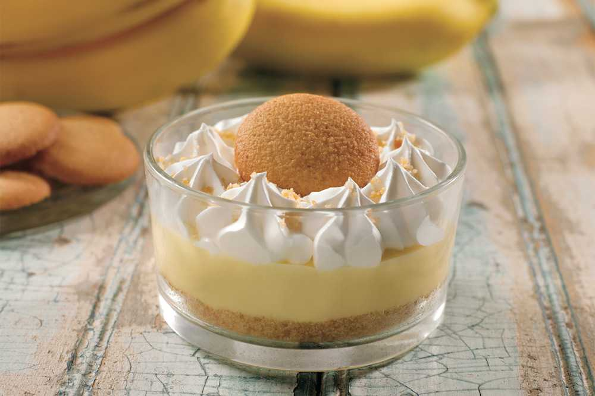

 Приготовить вкусный банановый кекс-пудинг> в порционных формочках можно всего за пол часа.
Этот рецепт пудинга с бананом очень прост, его освоит даже дебютирующая на кухне хозяюшка.
Я ужин отдаю врагу!
Но чай не выпить - не могу.
К нему печенька, мармеладка-
Теперь усну, пожалуй, сладко...
Содержание
| Банан крупный | 0,5 шт. (или 1 маленький) |
| Масло сливочное | 1 ст. ложка + для смазывания формы |
| Сахар | 2 ст. ложки |
| Мука | 3 ст. ложки |
| Яйцо | 1 шт. |
| Молоко | 1 ст. ложка |
| Сода | 0,3 ч. ложки |
| >Уксус | 0,5 ч. ложки |
Количесто ингридиентов рассчитанно на одну порцию.
Подготавливаем ингредиенты для пудинга с бананом. Банан возьмем перезревший.
Также подготовьте маленькую жаростойкую форму для выпекания. Включаем духовку заранее что бы она хорошо прогрелась.
Как приготовить кекс пудинг с бананом:
Растапливаем сливочное масло и переправляем его в миску.
┍──━──━──┙◆┕──━──━──┑
Приятного аппетита
┕──━──━──┑◆┍──━──━──┙
© Все права защищены! <Готовить этот пудинг можем только мы!>